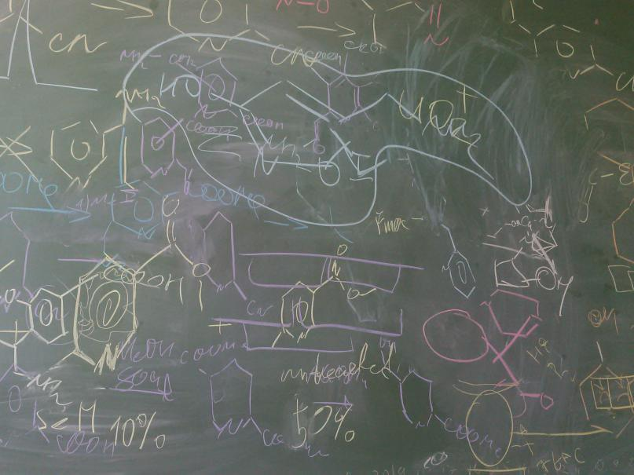

Home
О скоупах - August 2, 2015
Jolla - July 17, 2014
Немного о лунном. - June 18, 2014
Почему хаскель не подходит для скиптования? - June 13, 2014
e - May 24, 2014
Jolla haskell lua манифестО скоупах - August 2, 2015
Jolla - July 17, 2014
Немного о лунном. - June 18, 2014
Почему хаскель не подходит для скиптования? - June 13, 2014
e - May 24, 2014
Jolla haskell lua манифест